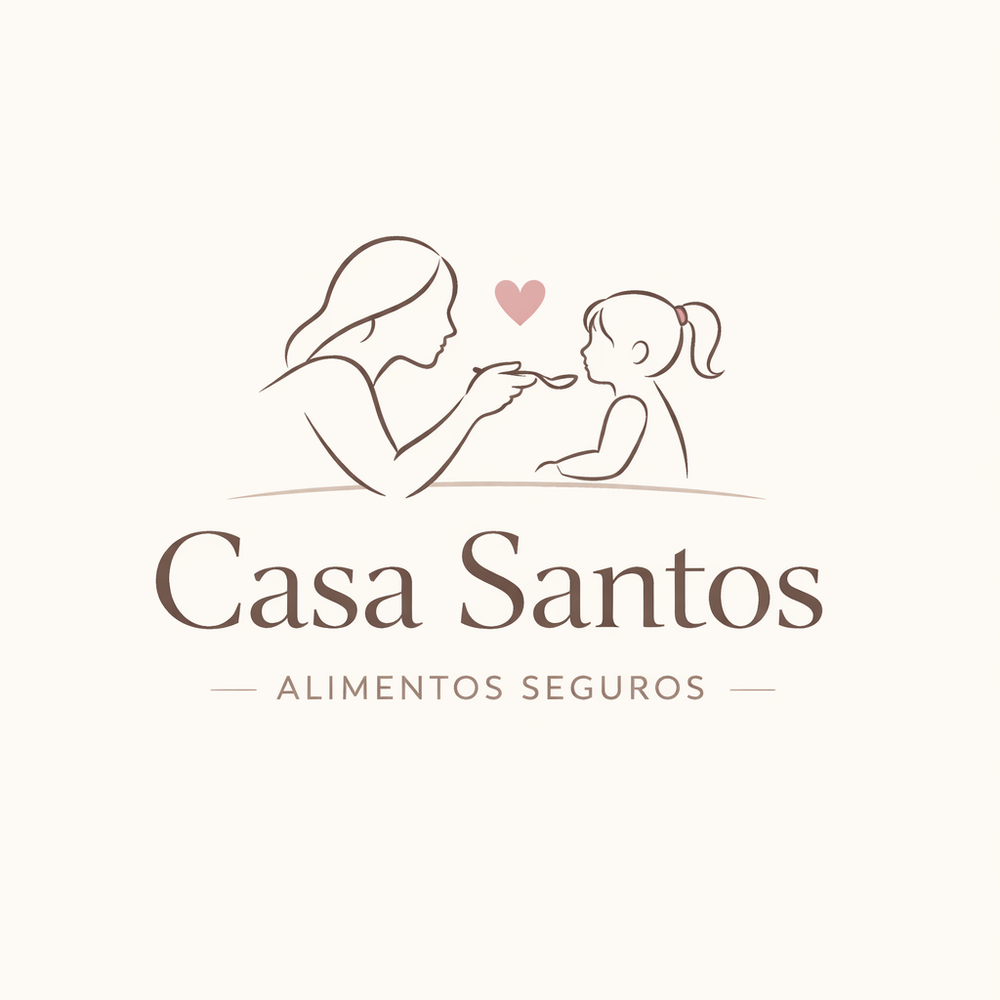
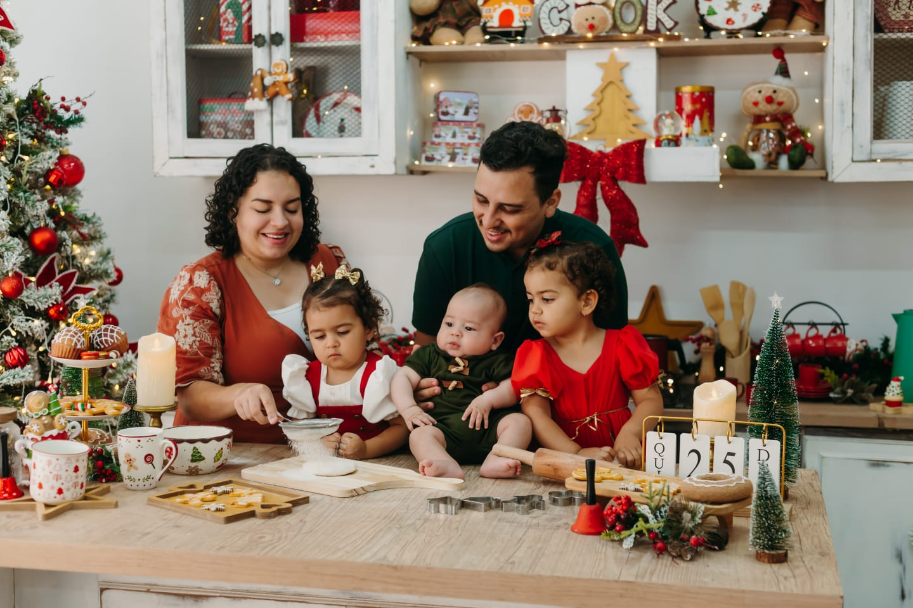

Criados com cuidado para famílias com restrições alimentares

Somos a família Santos.
No final de 2025, descobrimos alergias alimentares na nossa filha mais velha. E como muitas famílias, ficamos perdidos no começo.
Foi dessa necessidade real que nasceu a Casa Santos: um espaço criado para oferecer alimentos seguros, confiáveis e feitos com carinho.
Da nossa casa para a sua.
✔ Segurança alimentar em primeiro lugar
✔ Produção artesanal com cuidado
✔ Transparência nos ingredientes
✔ Feito para famílias reais